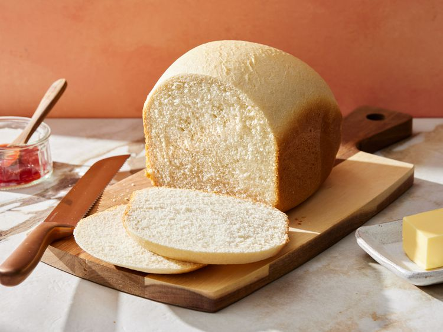

White Bread for the Bread Machine
Bread machine white bread, very simple

Ingredients
- 1 cup warm water
- 3tablespoons white sugar
- 3 tablespoons vegetable oil
- 1 1/2 teaspoons salt
- 3 cups bread flour
- 2 1/4teaspoons active dry yeast
Steps
- Gather all ingredients.
-
Place water, sugar, oil, salt, bread flour, and yeast into the pan of
the bread machine (or in the order recommended by your bread machine
manufacturer).
- Bake on White Bread setting.
-
Use oven mitts to carefully remove the bread pan from the machine.
-
Remove bread from the pan and let cool completely on a wire rack before
slicing.